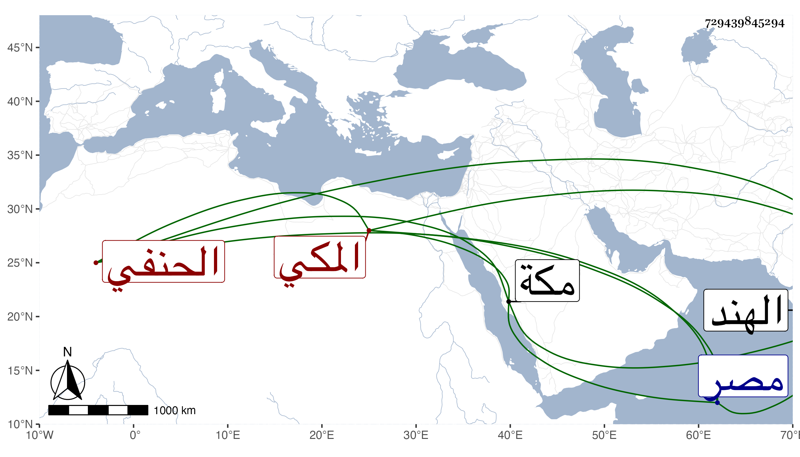

0902Sakhawi.DawLamic.ITO20230111-ara1.EIS1600.729439845294
Biography ID: 729439845294
368
عمر بن محمد بن أحمد بن محمد بن محمد بن سعيد السراج أبو اليسر بن الرضى أبا حامد المكي الحنفي أخو أبي الليث محمد الآتي ويعرف كسلفه بابن الضياء . ولد في ذي القعدة سنة اثنتين وأربعين بمكة ونشأ بها فحفظ القرآن وصلى به التراويح بالمسجد الحرام سنة أربع وخمسين وغيره وحضر عند ابن عمه في الدروس بل دخل مصر غير مرة وأخذ فيها عن الأمين الأقصرائي ونزل له والده عن تدريس أيتمش وكان ينوب عنه فيه ابن عمه الجمال محمد بن القاضي أبي البقا ثم أخوه أبو الليث وسافر إلى الهند غير مرة مات في ثانيتهما سنة سبع أو ست وثمانين غريبا غريقا واستقر أخوه في درس أيتمش بعده .
